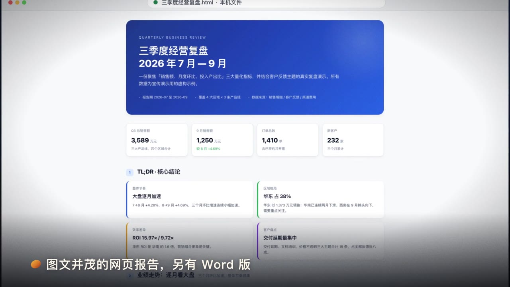
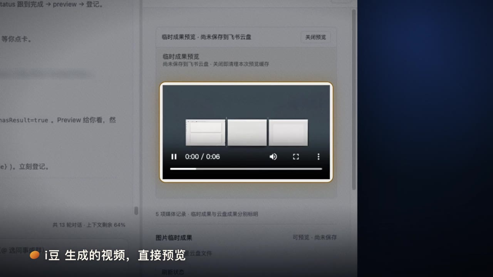
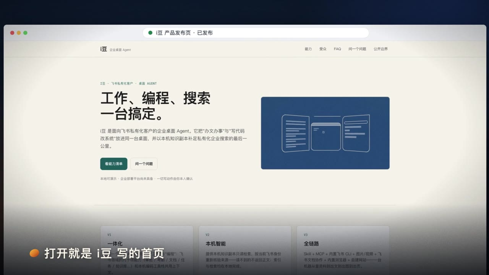
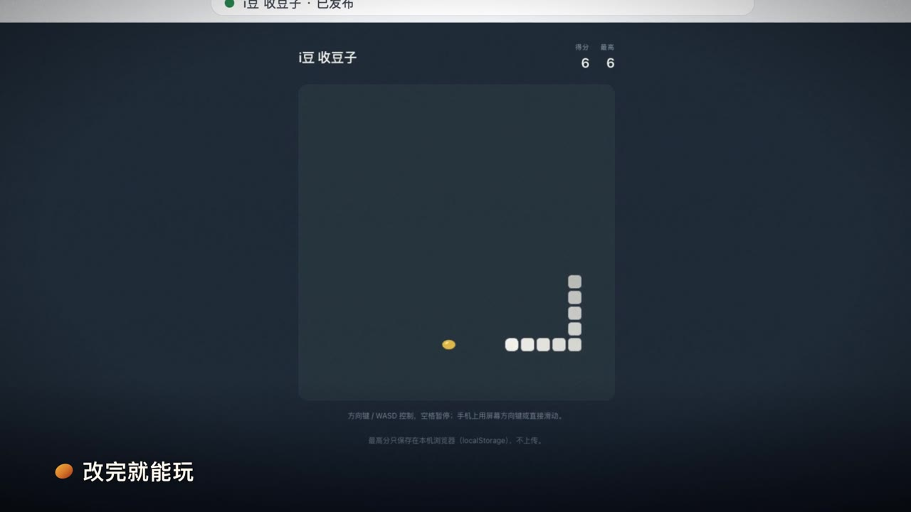
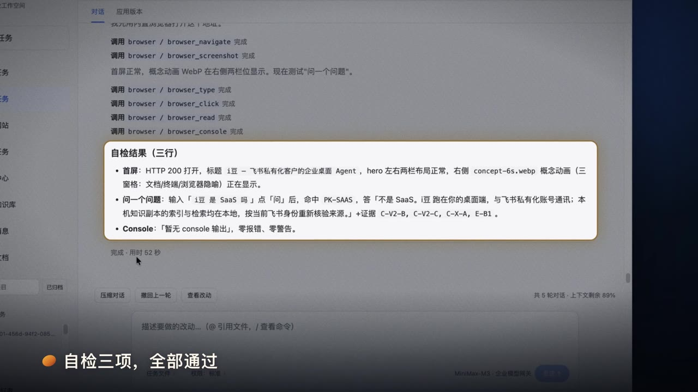
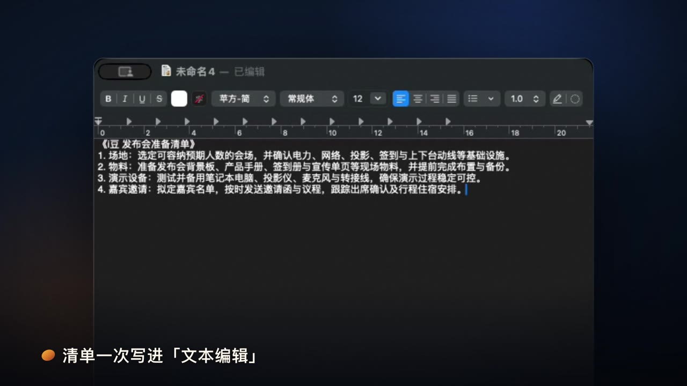

飞书消息
一句话，替你发出去。默认先弹确认卡，你点了才发；授权过就直接发。
用你的飞书账号登录，在同一个窗口里发消息、改文档、做网站、查知识、写代码。默认每一步先问你；你一授权，它就全自动做完。
和同类产品用同一批文档、同一批问题正面比；用公开编程题检验真本事。评测条件写在页面最下方，可以复核。
2026-09-21 · 16 篇企业文档 · 32 道题 · 两边都用真实飞书账号
2026-09-12 · 同一个应用 · 同一套 28 道可回答的题，每轮改进后复测
Terminal-Bench 2.1 · 10 道题 · 每题一次 · GLM-5.3
每个圆点是一道公开编程题：实心为解出，空心为未解出。
在 i豆 里说，或者在飞书会话旁边的 Agent 里说。
按你的飞书权限，读消息、文档、表格和知识库。
写文档、做网站、生成图片视频、写代码。
默认对外动作之前先问你：发给谁、改哪里、谁能看到。你授权过的，就不再逐次问。
写进文档、发进会话、存进云盘，再自己检查一遍。
消息、文档、云盘、知识库就在 i豆 旁边打开；电脑上的文件和应用，它也能动手。下面每张图都是 i豆 真实运行时的画面。
一句话，替你发出去。默认先弹确认卡，你点了才发；授权过就直接发。
边看边改，改动直接写进飞书文档。

读你电脑上的表格、文档和 PDF，算好的报告写回原来的文件夹。

说一句就生成；默认先告诉你模型和规格，视频每次都问你。

说需求，它写好网站并发布；谁能打开由你选。

一个模板，改成你的游戏，改完就能玩。
问公司制度，答案带出处；只查你有权读的资料。
说好做什么、几点做，到点自己跑；报告存进你的云空间，还能照你选好的，自动写进文档、发到群里。

做完，它自己打开网页检查一遍。

看得见屏幕，也动得了手。默认要进哪个应用操作，先问过你。
i豆 装在员工电脑上，用员工自己的飞书身份和权限工作；服务端只做很少的事。
Agent 的内核是 OpenAI 持续迭代的 Codex。绝大多数团队自己写不出比它更好的 Agent，i豆 不重复造轮子，而是把精力放在飞书一体化和企业可控上。Codex 每一次升级，i豆 的编程和执行能力都随之提升。
i豆 可以接入企业自有或指定的大模型：用哪家、放在哪里，由企业决定。国产模型同样能用——上面的编程抽测，用的就是 GLM-5.3。
i豆 的飞书能力跟随飞书官方 CLI：消息、文档、电子表格、多维表格、云盘、知识库、日程、任务，都已接入。飞书 CLI 每新增一项能力，i豆 就能多替你做一件事。
直接沿用飞书的登录态：不用单独建设账号体系，员工也不用多记一套密码。
你在飞书里看不到的，i豆 也读不到。查知识时每次都按你当前的飞书身份重新核验，收回的权限，下一次查询就生效。
不需要向量数据库，也不需要额外的检索集群，部署和维护都简单——知识问答照样和豆包工作打平。
兼容飞书 SaaS 与飞书私有化部署。私有化里的使用体验，与 SaaS 几乎一致。
网站、小游戏、数据看板，说需求就能做出来，本人确认后发布——私有化环境里同样有妙搭式的应用搭建体验。
用飞书账号登录，消息、文档、云盘、知识库马上能用。
服务端可以部署在企业自己的服务器上；知识副本加密存放在员工本机。
没有向量数据库，没有额外的检索集群；权限和账号都交给飞书。
接入企业自有或指定的大模型服务，国产模型也能用。
i豆 会在这里公开源代码。在那之前，每一个版本都要先通过全部自动化测试和桌面验收，才会发到用户手上。